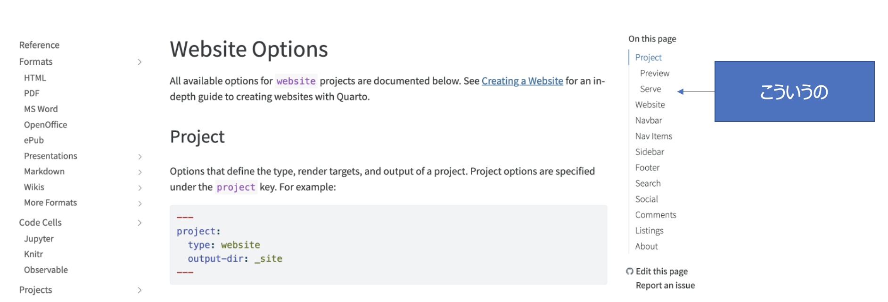

1 使ってみる
ここにメモしたのは全部こちらからの抜粋なので quartのドキュメントを見る。
quarto create-project guchiguchi-weblog --type website:blogで必要ファイルを作成して、
quarto preview guchiguchi-weblogを実行して表示されるアドレスにアクセス。 Rstudioのproject作成からでもできる。
2 個人的なメモ
postsに投稿ごとのファイルを作る
postsディレクトリに投稿ごとのディレクトリを作成して、 その中にindex.qmdをつくる。使用したデータなどもここに入れる。 テンプレを作成してそれをコピペしてディレクトリ名をかえるとよさそう。
draft: trueを設定する
trueにすると投稿されない。 常にtrueにしておいてfalseにかえる。
投稿日を今日にしたい
date: todayに設定
3 フォーマット工夫点
_quarto.ymlをいじるとの微調整やテーマを変更できる。 このサイトは以下のように変更
project:
type: website
website:
title: "website project"
navbar:
right:
- about.qmd
- icon: github
href: https://github.com/
- icon: twitter
href: https://twitter.com
format:
html:
theme: solar
css: styles.css
toc: true
number-sections: true以下デフォルトからの変更点
3.1 左側にアウトラインを作成したい
つまりマークダウンでの階層ごとにこういう表示できるようにしたかった。 toc: trueを追加
3.2 右上にgithubとかのアイコンを置きたい
navbarを追加
3.3 テーマを変えたい
themeで記述 ここから選ぶ
https://quarto.org/docs/output-formats/html-themes.html
3.4 自動でnumberingしてほし
number-sections: true
を追加
4 Publish
いろいろ対応できるみたいだが、 Quarto hubでやってみた。
- Quarto hubでアカウント作成してログイン
- ターミナル上でpubulish実行
quarto publish quarto-pub自分の環境では勝手にwebに飛んで、apikeyなどの情報が作成された。 _publish.ymlに保存されるっぽい
5 便利ツール
画像などの素材
https://icons.getbootstrap.com/